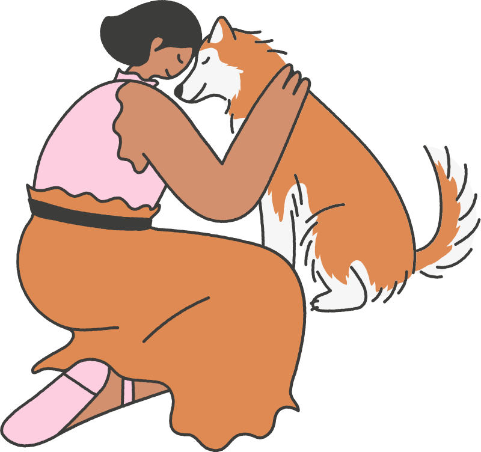

Nombre de la Mascota
Tipo: Perro
Raza: Ovejero Aleman
Tamaño: Grande
Color: Negro
Descripción: Descripción detallada de la mascota.

Nombre de la Mascota
Tipo: Perro
Raza: Husky
Tamaño: Grande
Color: Naranja
Descripción: Descripción detallada de la mascota.